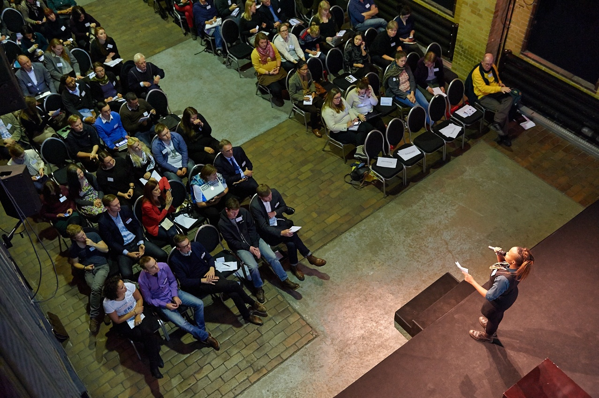
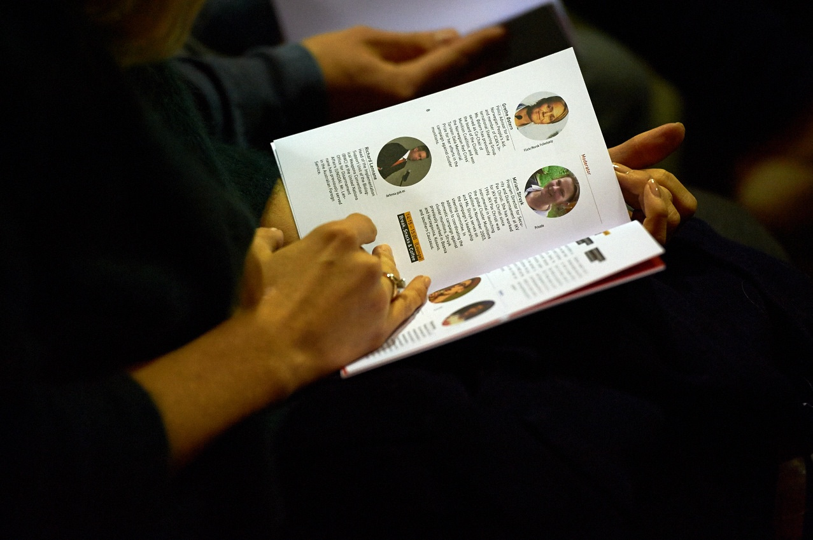
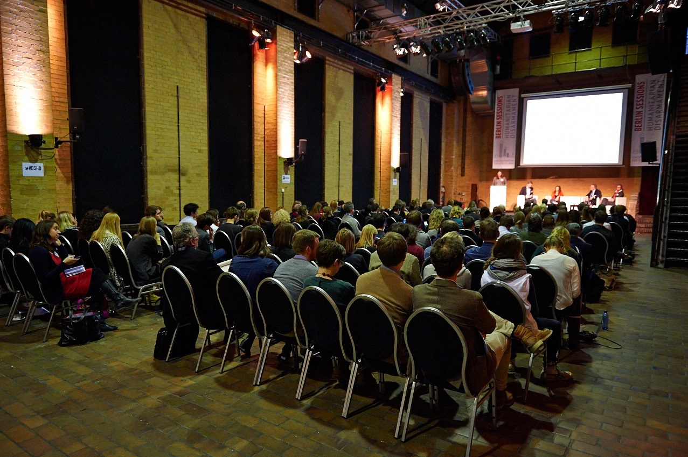
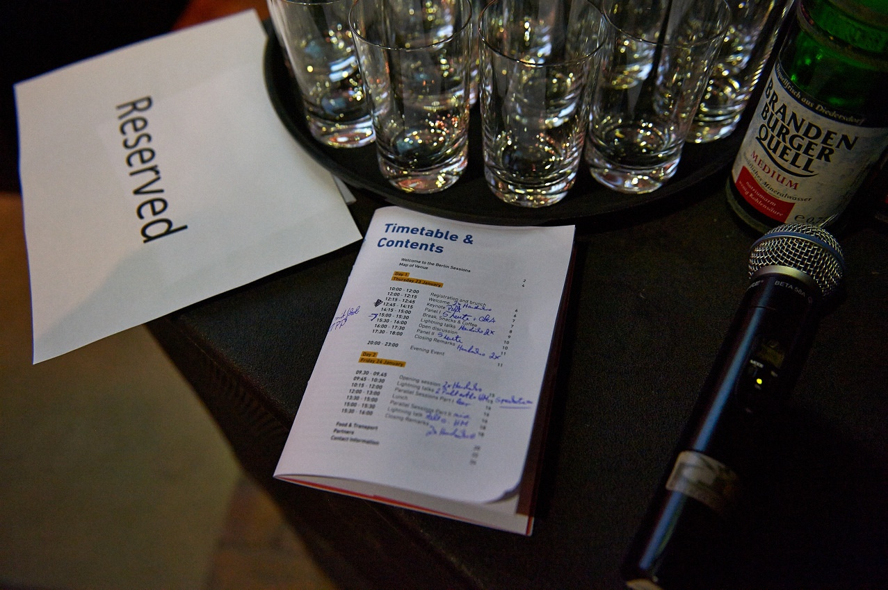
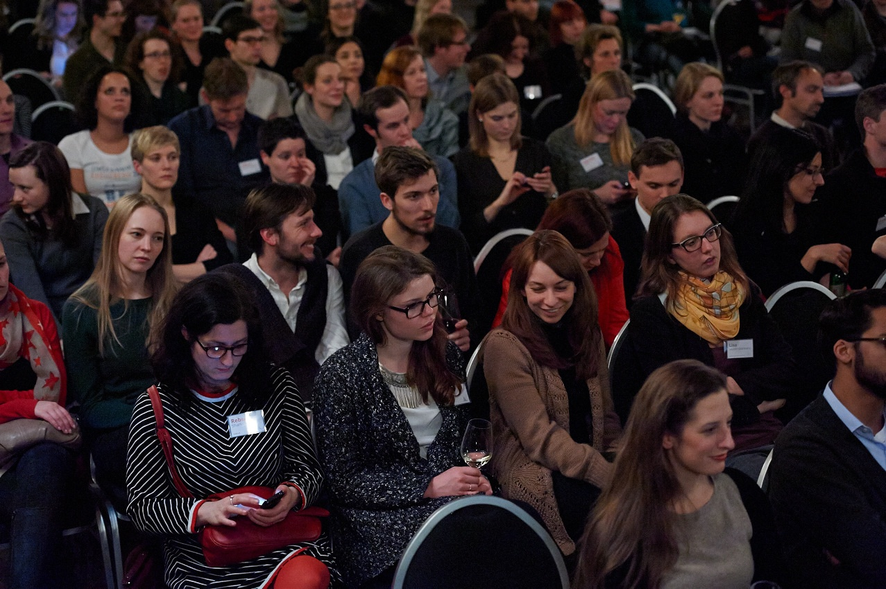

Thank you for making
the Berlin Sessions great!
On January 23/24, over 150 people from over 70 organizations gathered in Berlin to strengthen their efforts to prevent human suffering by banning unacceptable weapons.
We'll bring you a full report soon. In the meantime, you can browse 140 photos on Flickr and us on facebook to see what we're up to next.
Close this.






